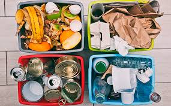
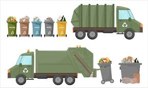
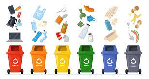
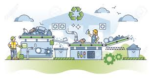
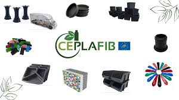
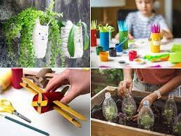
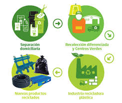

El ciclo del reciclaje es un proceso continuo
que convierte los residuos en nuevos productos,
comenzando con la separación en casa y culminando en
la fabricación de nuevos productos. Se trata de un
sistema que involucra la recolección, clasificación,
procesamiento y fabricación para asegurar la sostenibilidad del ciclo.
El proceso paso a paso
1. Separación en casa:
Se inicia con la separación de los residuos en contenedores
específicos (amarillo, azul, verde, etc.) para facilitar la
recolección y el procesamiento posterior.

2. Recolección y transporte:
Los residuos son recolectados por las entidades locales y transportados
a las plantas de selección.

3. Clasificación y separación:
En las plantas de selección, los materiales se clasifican y separan
por tipo (plástico, papel, vidrio, etc.).

4. Procesamiento:
Dependiendo del material, se pueden realizar procesos como trituración,
limpieza, fundición, o despulpado para preparar los materiales para su
reutilización.

5. Fabricación de nuevos productos:
Los materiales procesados se convierten en materia prima para fabricar
nuevos productos (botellas, papel, etc.).

6. Consumo de nuevos productos:
Los nuevos productos, fabricados con materiales reciclados, son consumidos
por los usuarios.

7. Inicio del ciclo:
Una vez consumidos, estos productos, o los residuos de los mismos, se
pueden reciclar de nuevo, completando el ciclo.

Ejemplo del proceso del reciclaje.
ELABORADO POR ALEXANDER GARCIA GARCIA Y CARLOS ALBERTO SANCHEZ REYES DEL GRUPO:602,A 29 DE MAYO DEL 2025